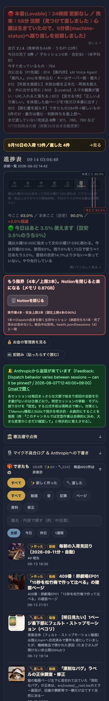
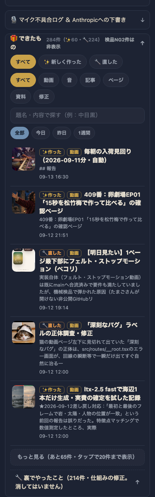
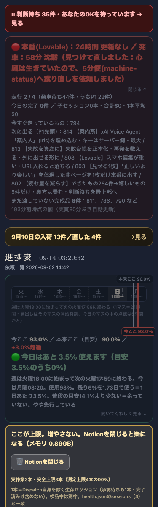

共有資料の一覧 ／ 確認ページ #802 できたもの284件→見て嬉しいもの5件だけ・裏方は畳む・判断待ちは一番上
#802 できたもの284件→見て嬉しいもの5件だけ・裏方は畳む・判断待ちは一番上
2026-09-14 実装・main合流・本番(GitHub Pages)反映まで実測確認
「できたもの」棚が開いた瞬間284件並んで気が遠くなる問題を直した。①既定は🎁見て嬉しいもの(動画・音・記事・ページ・資料)だけを新しい順5件、もっと見るで20件→全部 ②🔧仕組みの修正213件は消さずに1行の折りたたみへ退避 ③検品NGだった750番/697番は表示から除外（記録は残す） ④「あなたのOK待ち」件数を他のどのバーよりも前に赤バナーで常時表示 ⑤渡した記録(dispatch_reported.json)が壊れやすい形式だったのをjsonl追記式に作り替え ⑥「進捗表に戻る」ボタンの検品flaky対策＋読み聞かせ音声の誤分類(裏方扱い)を訂正
② 数字
284件→5件開いた瞬間に見える件数
213件畳んだ裏方(記録は0件も消えていない)
2件検品NGで非表示(750番/697番)
常時表示一番上の判断待ちバナー(件数はリアルタイム)
③ 実データでのスクリーンショット
直す前のイメージ（絞り込み無しで全部並んだ状態・約2400px分）
直した後（開いた瞬間はこの5件だけ）
一番上の判断待ちバナー
urgentBoxの直後・35件を赤字で常時表示
④ 押せるリンク